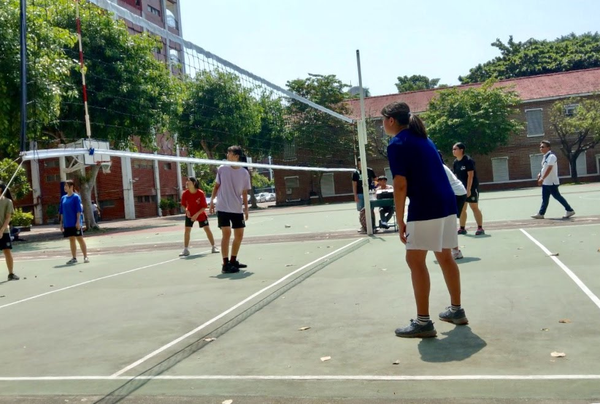

STUDY
我國小就讀鹿港的文開國小。國中跑到彰化市就讀精誠中學。在高中時期，由於各種原由，轉換到台南就讀長榮中學，與姊姊一起居住。而高中是一個影響我很深的階段，因為家長都不在身邊，讓我更大膽地去做自己想做的事，因此不論是參加活動、培養興趣都沒有受到任何拘束，可以盡情的開展並研究自己的未來。在當時我就發現自己喜歡攝影、打排球。
在高一時參加了足球社團，透過這個社團學習：如何與陌生的人團結、運動；在高二時，持續參加運動型社團 - 排球，這個社團是當時才創立，因著排球風氣越來越盛行，有同學找了一個專任老師（擁有排球教練執照）來帶領整個社團。那時教練請大家分組並派一位組員擔任隊長，而我當時就當上隊長來溝通隊員間內部事情，使我不僅有能力溝通，也有能力教導。
因著高二下學期時，因著班級人數需要調整，我從一班來到了二班，學習適應新的環境。這個轉換讓我在二班認識了不同個性的人，而他們與考試壓力大的一班直升班的個性是截然不同的。
